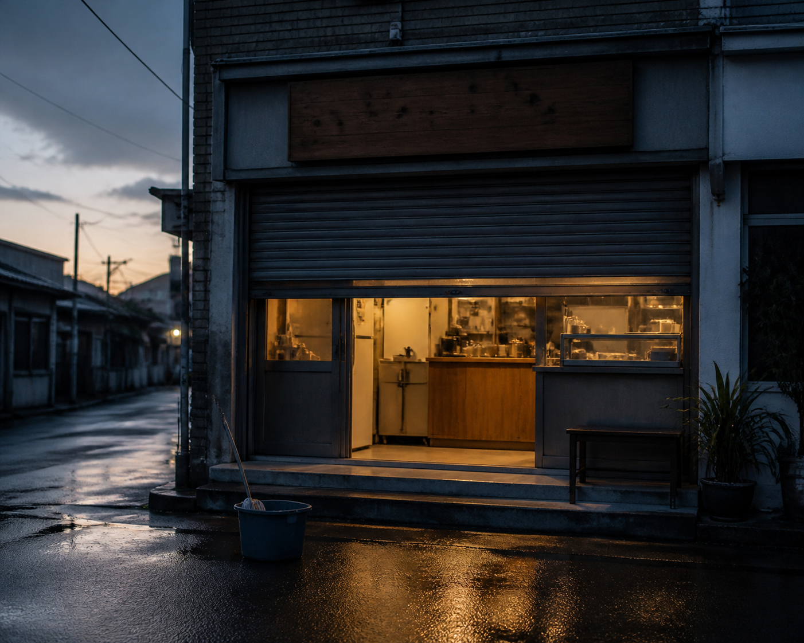

가게는 줄었는데 60대 사장님은 210만 명 — 예산 0원 창업의 첫 3주
자영업자는 2년 연속 줄었는데 60세 이상 자영업자는 210만 명을 넘었습니다. 2차 베이비부머 은퇴와 폐업 지원 법정화가 겹친 11월에, 마케팅 예산이 없는 가게가 첫 3주에 할 일을 순서대로 정리했습니다.

새로 가게를 여는 사람이 준비된 창업자라는 가정은 이제 틀렸습니다. 자영업자 수는 2년 연속 줄었는데 60세 이상 자영업자는 210만 명을 넘었습니다. 그래서 첫 3주에 할 일은 간판이 아니라, 손님이 우리 가게를 찾는 경로 세 개를 만드는 일입니다.
지난달 상담 자리에서 사장님이 이런 말을 하셨습니다. "홍보는 나중에 돈 생기면 하려고요." 그 말이 나오면 저는 예산 이야기부터 꺼내지 않습니다. 대신 이렇게 묻습니다. 지금 사진이 몇 장 있으신가요. 이 질문에 답이 나오면, 예산이 없어서 못 하는 일과 예산이 없어도 되는 일이 갈립니다. 상담에서 만난 가게는 대부분 후자였습니다.
오늘 확인된 숫자 세 개#
- 자영업자의 방향. 자영업자 수는 올해 1월 기준 2년 연속 감소세를 이어갔지만, 60세 이상 고령 자영업자는 급증하며 210만 명을 돌파했습니다(조선비즈, 2026년 11월 20일).
- 은퇴의 규모. 2차 베이비부머는 1964~1974년생으로 약 954만 명입니다. 이들이 2024년부터 2034년까지 차례로 60세에 이릅니다. 소상공인시장진흥공단은 60세 이상 자영업자의 진입과 경영 현황을 분석해 유형별 지원 방안을 마련하는 연구에 들어갈 계획이고, 중기부와 소진공은 내년 1분기까지 대략적인 안을 만들 예정이라고 합니다(같은 기사).
- 제도의 변화. 11월 27일부터 개정 「소상공인 보호 및 지원에 관한 법률」(법률 제21702호)이 시행됩니다. 폐업을 위한 점포 철거, 경영·법률·세무 관련 컨설팅, 심리 상담과 회복 프로그램이 법정 사업으로 들어가고, 지원 정보를 한곳에 모으는 온라인 플랫폼의 근거도 생깁니다(국가법령정보센터).
세 숫자가 가리키는 방향은 하나입니다. 시장은 '새로 여는 사람'보다 '버티는 사람'과 '정리하는 사람'으로 채워지고 있습니다. 마케팅 안내가 이 상황에서 자주 어긋나는 이유도 여기 있습니다. 대부분의 조언은 성장을 전제로 쓰여 있습니다. 예산이 없는 가게에 필요한 것은 성장이 아니라, 이번 달 문의를 한 건이라도 더 만드는 순서입니다.
예산이 없을 때 순서가 뒤집히는 지점#
보통은 간판, 인테리어, 그다음 SNS 순으로 움직입니다. 그런데 손님이 보는 순서는 정반대입니다. 검색 결과의 이름과 사진, 영업시간과 가격, 연락할 곳. 이 셋이 준비되지 않은 상태에서 SNS를 시작하면 글은 쌓이는데 문의는 오지 않습니다. 조회수와 문의가 따로 움직이는 구조는 조회수는 오르는데 문의가 없을 때에 정리해 두었습니다.
바꿔 말하면, 돈이 드는 일은 대개 나중 순서입니다. 사진을 새로 찍고, 영상을 만들고, 광고를 돌리는 일은 앞의 셋이 갖춰진 뒤에 효율이 생깁니다. 순서를 바꾸면 같은 돈을 두 번 씁니다.
첫 3주 실행표#
- 1주 차 — 있는 것 세기. 보유 사진이 몇 장인지, 최근 손님이 어떤 경로로 왔는지, 영업시간과 가격이 어디에 적혀 있는지 확인합니다. 새로 만들 것은 없습니다. 이 목록이 앞으로 3주의 재료가 됩니다.
- 2주 차 — 무료 채널 세 개 맞추기. 네이버 플레이스, 구글 비즈니스 프로필, 카카오톡 채널입니다. 셋 다 등록과 수정에 돈이 들지 않습니다. 목표는 내용을 같게 만드는 것입니다. 영업시간, 대표 사진, 연락 방법이 세 곳에서 다르면 손님은 가장 오래된 정보를 믿습니다.
- 3주 차 — 글 세 편과 문의 경로 하나. 손님이 자주 묻는 질문을 세 개 골라 각각 한 편으로 씁니다. 그리고 문의를 받을 곳을 하나만 남깁니다. 전화, 카카오톡, 예약 중 하나입니다. 셋을 다 열어 두면 어느 곳으로도 깊게 오지 않습니다.
- 1주 차 확인 기준. 사진 장수와 정보 위치를 종이 한 장에 적었는가. 지출은 0원입니다.
- 2주 차 확인 기준. 세 화면의 영업시간과 연락처가 같은가. 지출은 0원입니다.
- 3주 차 확인 기준. 문의가 어디로 들어왔는지 셀 수 있는가. 지출은 0원입니다.
세 주의 공통점은 지출이 0원이라는 것입니다. 대신 시간이 들어갑니다. 주 3~4시간을 세 주, 모두 열두 시간 남짓입니다. 이 시간을 낼 수 없다면 순서를 늘리는 대신 질문을 하나로 줄이는 편이 낫습니다.
60대 사장님이 특히 손해 보는 두 가지#
첫째, 온라인 예약을 닫아 두는 것입니다. 기업 단체나 젊은 손님은 전화보다 화면을 먼저 봅니다. 예약 기능이 없으면 받을 수 있는 예약을 안 받는 셈이고, 이 손실은 장부에 음수로 찍히지 않아서 보이지 않습니다.
둘째, 정리하는 결정을 늦추는 것입니다. 11월 27일부터 폐업 지원이 법정 사업이 되지만, 정보가 흩어져 있으면 필요한 시점에 찾지 못합니다. 버틸지 정리할지 판단이 서지 않을 때는 이번 달 문의 건수와 응대에 쓴 시간을 먼저 적어 보시길 권합니다. 숫자가 있으면 결정이 감정에서 조금 떨어집니다.
왜 촬영을 전제로 견적을 받으면 안 되나#
노티스랩은 업체가 가진 기존 사진과 영상으로 제작하고, 별도 현장 촬영은 기본 서비스로 넣지 않습니다. 이유는 비용만이 아닙니다. 촬영은 하루를 비워야 하고, 그 하루는 매출이 나는 하루입니다. 사진 열 장과 인터뷰 한 시간이면 대부분의 가게가 첫 글 세 편을 만들 수 있습니다. 사진 열 장으로 어디까지 되는지는 매장 사진 10장으로 블로그와 릴스까지에 따로 적어 두었습니다.
정부 예산의 방향도 참고할 만합니다. 중기부가 국회에 제출한 2027년 예산안에는 소상공인 사회안전망 5,744억 원이 편성됐고, 창업 5년 미만 청년 소상공인을 위한 맞춤형 정책보험이 300억 원으로 신설됩니다. 희망리턴패키지는 2026년 3,056억 원에서 3,153억 원으로 늘었습니다(대한민국 정책브리핑, 2026년 11월 13일). 이 예산은 버티기와 재기에 쓰이는 돈입니다. 손님을 부르는 일은 여전히 사장님 몫으로 남습니다.
이 글의 한계#
고령 자영업자 지원책은 아직 연구 단계입니다. 소진공이 내년 1분기까지 초안을 만들고, 그 뒤에 구체적인 정책이 정해집니다. 지원 대상과 금액은 확정된 것이 아닙니다. 2027년 예산안도 국회 심의 중이므로 숫자가 바뀔 수 있습니다.
법 시행일과 조항은 국가법령정보센터 원문으로 확인했지만, 실제 신청 절차와 지원 한도는 중기부와 소진공의 공고를 따로 확인하셔야 합니다. 60대라는 이유로 마케팅 방식이 달라져야 한다는 뜻도 아닙니다. 쓸 수 있는 시간과 예산이 다를 뿐, 손님이 가게를 찾는 원리는 나이와 상관없이 같습니다.
자주 묻는 질문#
60대에 가게를 여는 것이 현실적인가요?#
한 줄로 답할 수 없는 문제입니다. 확인된 것은 규모와 방향입니다. 고령 자영업자가 210만 명을 넘었고, 이들은 다른 연령층보다 창업 준비가 부족하고 숙박·음식점업이나 도소매업처럼 취약한 업종에 몰리는 경향이 있다고 관계자들은 말합니다. 준비가 부족하다는 지적은 곧 순서를 정하면 보완할 수 있다는 뜻이기도 합니다.
예산이 정말 0원이면 무엇부터 하나요?#
사진 장수 세기부터입니다. 그다음 영업시간, 가격, 연락처가 어디에 적혀 있는지 확인합니다. 이 세 가지가 정리되면 글로 만들 재료가 생기고, 무료 채널 세 곳에 같은 내용을 올릴 수 있습니다. 돈이 드는 단계는 그 뒤에 와도 늦지 않습니다.
폐업 지원은 어디에 신청하나요?#
11월 27일 시행되는 개정법은 지원 근거를 만들고 통합 플랫폼 구축 근거를 둔 단계입니다. 실제 신청 창구와 한도는 중기부와 소상공인시장진흥공단의 공고로 정해집니다. 희망리턴패키지처럼 기존에 운영되던 사업을 먼저 확인하시고, 새 플랫폼이 열리면 그쪽에서 지원 항목을 대조하시는 편이 빠릅니다.
정부 지원금을 홍보에 쓸 수 있나요?#
자금마다 용도가 정해져 있어 한 줄로 답할 수 없습니다. 정책자금은 대개 시설과 운전자금으로 쓰이고, 홍보물 제작을 따로 지원하는 사업은 별도 공고로 나옵니다. 신청 전에 공고문의 '사용 용도' 항목을 먼저 읽어 보세요. 용도를 벗어나 쓰면 환수 대상이 될 수 있습니다.
마무리: 세 주면 방향이 보입니다#
예산이 없다는 것은 아무것도 할 수 없다는 뜻이 아닙니다. 지금 있는 재료를 세는 일부터 시작하면, 어디에 돈을 써야 하는지가 뒤에 보입니다. 반대로 순서를 건너뛰고 광고부터 시작하면, 돈을 쓴 뒤에도 무엇이 문제였는지 알기 어렵습니다.
지금 갖고 계신 사진과 가게 정보를 보내주시면, 첫 3주에 무엇부터 손대면 되는지 정리해 드립니다. 카카오톡 채널 (새 탭에서 열림)로 연락 주셔도 됩니다.
KEEP READING
이어서 읽기
같은 흐름에서 이어지는 글입니다. 지금 매장에 해당하는 지점부터 읽으시면 됩니다.

매장 사진 10장으로 블로그와 릴스까지 만들 수 있을까?
촬영 없이 매장 사진 10장으로 블로그 글 세 편과 릴스 한 편을 만드는 실제 순서를 정리했습니다. 사진을 고르는 기준, 글과 영상에 컷을 나누는 법, 자막과 편집에서 정하는 것, 10장으로 안 되는 경우까지.

블로그 조회수는 오르는데 문의가 없을 때, 대행사 보고서에서 확인할 세 줄
조회수는 오르는데 문의가 없다면 원인은 네 갈래입니다. 대행사 보고서에서 새 검색어·플레이스 행동·다음 달 수정 한 줄을 확인하는 법과 사장님이 직접 하는 월간 점검 다섯 가지를 정리했습니다.